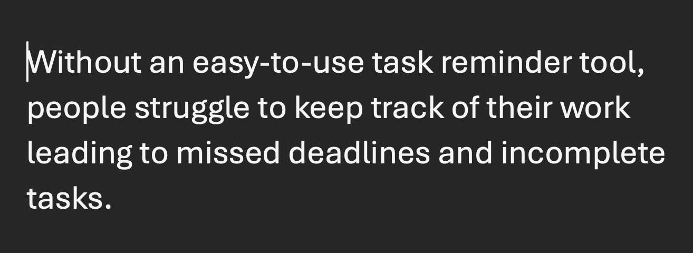
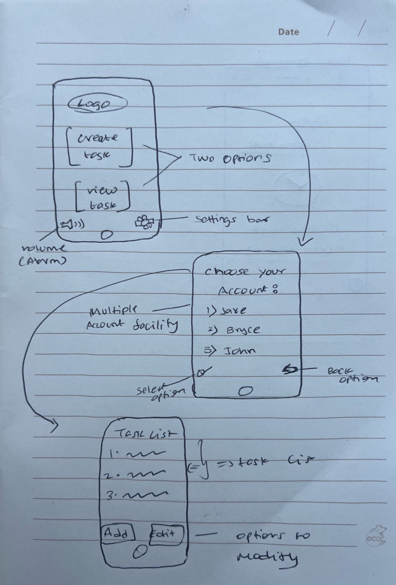
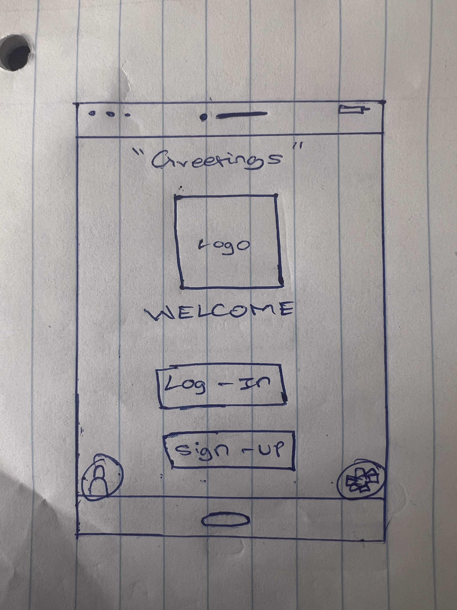
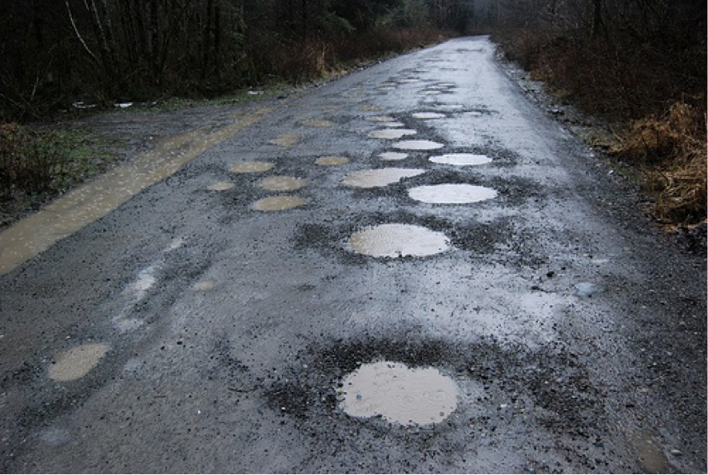

Problem Statement

Without an easy-to-use task reminder tool, people struggle to keep track of their work leading to missed deadlines and incomplete tasks.
Affinity Diagram

This is affinity diagram which represents my ideas and clusters which shows how an application can be used as a reminder or called 'task reminder'
sketches

A collection of 3 different sketches how this application or how the idea of creating a task reminder would like from a user's point of view.
Prototype

A step by step prototype that maps and shows how a task reminder app works
Algorithmic Design homework

One of my homeworks from my Algorithmic Design class about "pothole driving" which i personally consider as my hobby